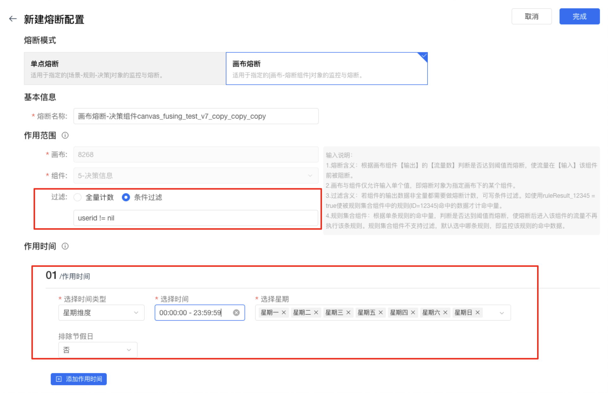

05 监控治理
1 告警治理

- 对于画布异常错误类型进行告警阈值及类型配置
- 告警SOP（待补充）
2 熔断配置


- 用于当监控对象（场景规则 / 画布组件）命中情况产生异常，达到预设的熔断阈值时，将该对象由人工或系统进行降级（生效转标记 / 组件阻断），以此规避风险
3 近线日志

- 记录了各业务方使用近线画布做决策的详细数据，包括：画布内的数据流转过程，各组件节点中间数据，命中数据等等相关信息；用于业务做数据分析、异常排查和问题定位等
4 作业分级
- 支持用户对不同的画布作业进行分级，rd同学根据不同的作业级别进行分类运维